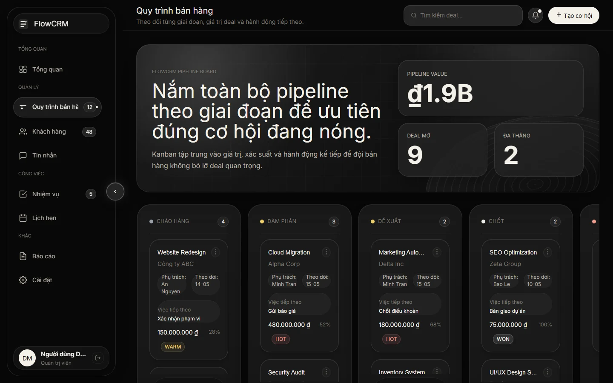
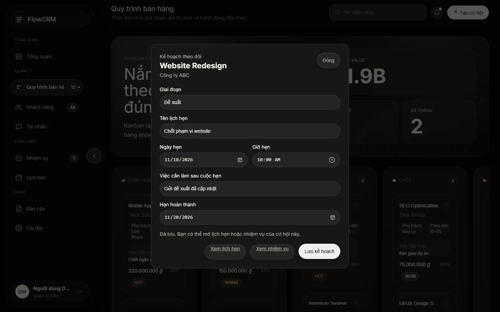

B2B SAAS & ENTERPRISE
FlowCRM
Keep the meeting and the next action connected to the sales opportunity that prompted them.

A stage tells the team where a deal is. A plan tells them what to do next.
The original demo presented pipeline, calendar and tasks as separate surfaces. Moving a pipeline card changed its position in the current view, while the appointment and follow-up lacked a stable connection to the deal. This iteration uses a sales coordinator preparing a proposal as its working scenario.
From the opportunity to a completed follow-up
- Open Website Redesign on the pipeline and move it to Proposal.
- Schedule a scope meeting and add a task to send the revised proposal.
- Open Calendar to verify the meeting appears on its exact date.
- Complete the follow-up in Tasks and open the same opportunity to see the updated status.

One opportunity owns the plan
Starting from the deal keeps its customer and title visible while planning. Saving the plan on that deal lets Calendar and Tasks show the same record. Reopening the form edits the existing plan and preserves completion when the task itself stays the same.
The stage selector gives keyboard and touch users a way to move the deal. The form rejects a follow-up deadline before the meeting date and keeps the entered information available for correction.
Verify the same record across three screens
In Chromium at 1440, 1280, 768, 390 and 375px, the scenario exercised stage persistence, invalid-date recovery, month placement, task completion after reload and keyboard focus after closing the dialog. This is prototype behavior verified with sample data.
Browser-local data and a single plan per opportunity
The updated flow uses local browser storage. Team access, shared calendars and notifications are outside this prototype. A follow-up evaluation should observe sales coordinators planning a real sequence of actions and check when they need multiple appointments or owners.
The public demo shows the earlier version. This case documents the locally verified iteration.